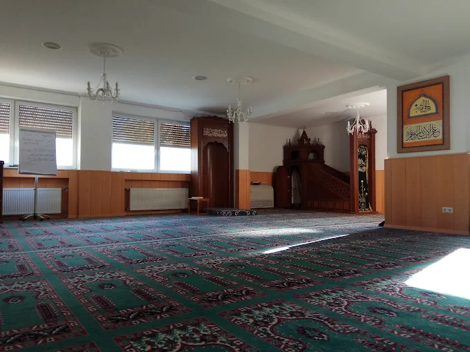

Eine Moschee für alle – ein Ort des Glaubens, des Dialogs und des gemeinsamen Miteinanders.
Die DITIB-Gemeinde Gießen möchte ein Gemeindezentrum mit Moschee als offenen Ort für Gebet, Begegnung und kulturelles Miteinander schaffen.
© 1987 DITIB-Company GmbH
Impressum |
Datenschutz